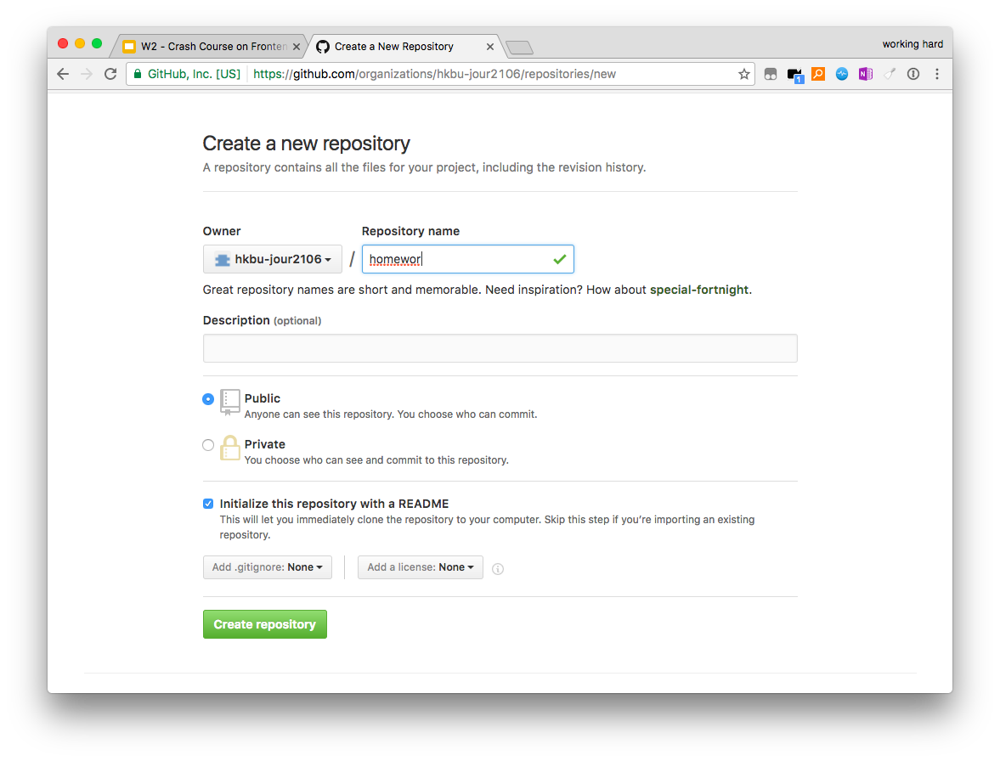

Step-by-step Guide for Hacking Homework#1
Key points of the homework requirements
- Need to build a web page with Github
- Submit the URL (hyperlink) as http://xxx.github.io/homework1
- Better to try different elements such as headers, paragraphs, images, listings and hyperlinks
- The webpage content is about analyzing a data visualization myth with cases;
- Deadline is 10 PM, FEB 2, 2017!
Let's Get Started!
Step #1: Create a new repo under your own Github account and name it as "homework1"

Step #2: